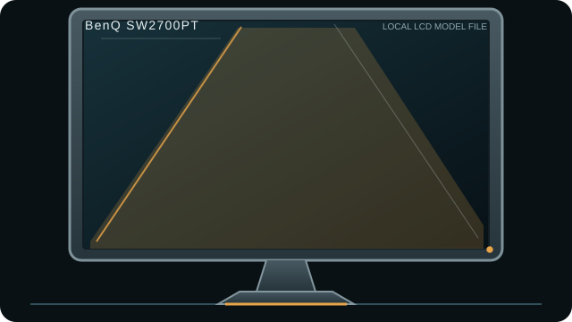

[ INDIVIDUAL COMPONENT // DISPLAYS ]
BenQ SW2700PT
27-inch QHD photo-editing LCD with a factory shading hood, SD reader and dedicated OSD controller.

IDENTIFICATION: Match the complete model and regional suffix on the rear label. This record summarizes published specifications; it is not a substitute for the exact unit manual, cable requirements or physical condition check.
Specifications
| Catalog subcategory | LCD displays |
|---|---|
| Exact product / family | BenQ SW2700PT |
| Panel and native resolution | 27-inch IPS-family LCD, 2560 × 1440 (16:9) |
| Native timing | 2560 × 1440 at up to 60 Hz |
| Inputs / companion ports | DisplayPort 1.2, HDMI 1.4, dual-link DVI-D; USB 3.0 hub, SD reader and headphone output |
| Revision and model distinction | Match the full SW2700PT model and region on the rear label; do not treat similarly named SW-series models as the same panel or port set. BenQ datasheet describes 10-bit color support and 99% Adobe RGB, but effective bit depth/color coverage depend on GPU, connection, software and measurement method. |
Host compatibility and connection notes
Use DP, HDMI or dual-link DVI for video; the USB hub, card reader and OSD controller are separate data/control features and need their corresponding connections. Palette Master Element hardware calibration requires a supported colorimeter and compatible host software.
The controller puck, hood and calibration accessories may be absent on used units. Record the physical accessories and calibration status; do not infer calibration from the model name alone.
Preservation notes
Record the rear-label model, serial/date code, included stand/accessories, tested input, source timing, image condition and calibration state. Keep the matching manual and cable/adaptor chain with the unit; use qualified service procedures for internal work.
Manufacturer documentation and sources
- BenQ — SW2700PT support and manualsOfficial manual and product downloads.
- BenQ — SW2700PT datasheet (PDF)Manufacturer technical sheet for panel, inputs and advertised color capabilities.